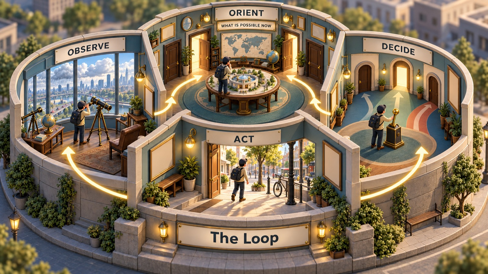

A fighter pilot who said he could win any dogfight in forty seconds spent his life asking one question: why does the faster thinker win?
← The Fishbone Diagram · All the tools · The Diffusion of Innovations →
Ten items. Say your answer out loud before you reveal it.
Read the sentence, guess the meaning of the word in bold, then reveal.
The three words are: agile · maverick · opponent. Read each meaning, say the word, then reveal.
One missing word fits every phrase in the group. Say it, then reveal.
Read each part. After it, answer the quick check from memory, then discuss one question.
John Boyd was born in Erie, Pennsylvania, in 1927. He grew up poor, joined the army at seventeen, and later trained as a fighter pilot in the US Air Force. In 1953 he flew F-86 Sabre jets in the Korean War. He flew twenty-two missions, but the war ended before he ever fought an enemy plane.
After Korea, he became an instructor at the Air Force's Fighter Weapons School in Nevada, where the best pilots learned air combat. Boyd soon became famous — and a little feared. According to the legend, he made every pilot the same wager: start the dogfight with your plane in the perfect position, right behind him, and he would turn the fight around within forty seconds, or pay forty dollars. The story says he never had to pay. They called him “Forty-Second Boyd”.
Boyd was loud, rude and impossible to control — a true maverick. But he was also a brilliant thinker. He kept asking a question that others ignored: why do some pilots win?
1. What happened in Boyd's Korean War service?
2. What was the forty-second wager?
3. What question did Boyd keep asking?
1. He flew 22 missions in F-86 jets but never fought an enemy plane before the war ended.
2. His opponent started in the perfect position behind him; Boyd bet he could turn the fight around within 40 seconds, or pay $40.
3. Why do some pilots win?
The Korean War gave Boyd a puzzle. The American F-86 and the Soviet-built MiG-15 were similar planes; in some ways, the MiG was better — it could climb faster and fly higher. Yet American pilots reported winning the large majority of their fights. (Historians now think the official numbers were exaggerated, but the Americans probably did win more often.)
Boyd's answer was not speed in a straight line. The F-86 had a bubble-shaped cockpit, so its pilots could see more of the sky. And its controls were powered by hydraulics, so it could switch from one movement to the next more quickly. The Sabre was more agile, not faster. Its pilots could notice a change, react, and change again before the MiG could keep up.
In the 1960s, Boyd and a mathematician, Thomas Christie, turned this into a theory about how aircraft gain and lose energy in a turn. It changed how the Air Force designed and judged fighters, and it helped to shape famous jets such as the F-15 and the F-16. But Boyd was already thinking about something bigger than planes.
1. In what ways was the MiG-15 better than the F-86?
2. What two features made the F-86 more agile?
3. Which famous planes did Boyd's energy theory help to shape?
1. It could climb faster and fly higher.
2. The bubble cockpit (better view) and hydraulic controls (quicker changes of movement).
3. The F-15 and the F-16.
Boyd came to believe that every contest — between pilots, armies or companies — is a race through the same four steps. You observe what is happening. You orient yourself: you make sense of it, using your experience, training and culture. You decide what to do. You act. Then the situation changes, and you start again. He called it the OODA loop.
The side that goes through the loop faster, and more accurately, gets “inside” the other side's loop. By the time the opponent has understood what is happening, the situation has already changed. The opponent becomes confused and makes mistakes. Boyd believed the most important step was orient: if your picture of the world is wrong, fast decisions only take you to the wrong place faster.
Boyd never wrote a book. Instead, he gave a briefing called “Patterns of Conflict” that could last many hours, to anyone who would listen. The US Marine Corps built his ideas into its official doctrine, and he advised planners before the 1991 Gulf War. He died in 1997. Today, his loop is taught to business leaders, emergency doctors, police officers, cyber-security teams and athletes.
1. What are the four steps of the OODA loop?
2. What happens when you get “inside” your opponent's loop?
3. Which step did Boyd think was most important, and why?
1. Observe, orient, decide, act.
2. The situation changes before your opponent understands it, so they become confused and make mistakes.
3. Orient — because if your understanding is wrong, fast decisions only lead to the wrong place faster.
Four steps, round and round. The loop is not about rushing — it is about making sense of a changing situation faster and better than the problem, or the opponent, can change.

Round and round — the aim is to get through the four rooms faster than the situation changes.
Observe, Decide and Act are things you can watch somebody doing. Orient happens inside your head, so it is the step people skip without noticing.
Here is a way to catch it. At any moment, some things are possible and some are not. When the ball bounces into the road, a door opens: a child might run after it. That door was shut a second ago. Orienting is noticing which doors have just opened — and which have just closed.
Two seconds on that quiet street:
Say these out loud. For each change, finish both sentences.
Then one more, about you: something changed for you this year. Which doors did it open, and which did it close?
You are driving down a quiet street when a ball bounces into the road. Which step of the loop is each moment? Choose, then check.
1. Orient — making sense of what you saw.
2. Observe — taking in new information.
3. Act — doing it.
4. Decide — choosing between options.
5. Observe — the loop starts again — new information.
6. Orient — using experience to understand the situation.
Speed isn't everything. A fast loop built on a wrong picture of the world leads to fast mistakes.
It sounds simpler than it is. Boyd's “orient” step was rich and complicated; many summaries reduce it to a slogan.
Not every problem is a contest. Some decisions, like choosing a career, need slow thinking, not a race.
The OODA loop is a sequence: one step happens, then the next. Time clauses let you say exactly when — and they follow a tense rule that many learners miss.
Write as soon as, until, by the time or while. Use each once.
1. the firefighters arrived, the building had already burned down.
2. Please don't open the oven the timer rings.
3. the pilot saw the warning light, she turned back to the airport.
4. Someone stole my bag I was looking at the map.
1. By the time
2. until
3. As soon as
4. while
Each sentence has one mistake. Write the correction.
1. I'll tell you as soon as I will know the results. →
2. Once you will finish the test, give it to the teacher. →
3. By the time the police came, the thief escaped. →
4. We won't start until everyone will be here. →
1. as soon as I know
2. Once you finish / have finished
3. the thief had escaped (it happened before they came)
4. until everyone is here
Now describe the four steps of a decision you make every day, using as soon as, once and until.
Put the loop to work. Choose a task, start the timer, and talk. Use the time clauses from the grammar tab.
Describe a moment when you had to act quickly. Walk through it step by step: observe, orient, decide, act.
Think of an organisation that reacts too slowly to change. Which step of the loop is its biggest problem?
Choose a skill, such as driving, a sport or teaching. How does experience make a person's loop faster?